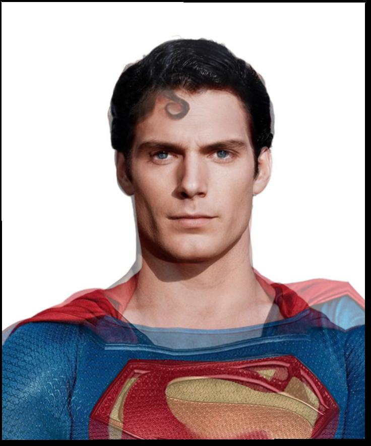

Supermen
There are two famous Supermen (non-exhaustive list)... what would their midway face look like?These images were taken out of Google search, and edited in Adobe Photoshop for background removal and alignment. No other image tools were used, everything else is math!
Christoper Reeves

Henry Reeve? Christopher Cavill? The Super-est Man
Henry Cavill

GIF morph.